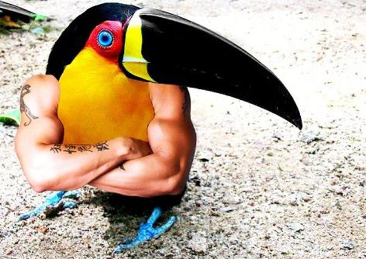
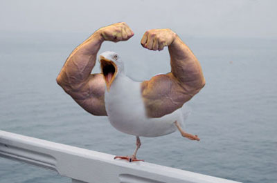
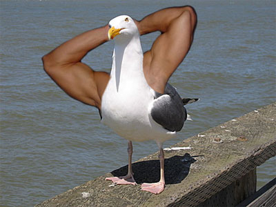
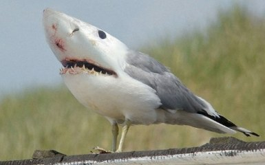

Java has been around for a while, reaching a respectable 22 years old. Released in May 23, 1995 by Sun Microsystems. Sun was aquired by Oracle 15 years later in January 27, 2010.
It has a myriad of features such as:
- Write once, run anywhere philosophy
- Completely object oriented, thus has no functions only methods (no first class functions)
- All object variables are references
SomeClass reference = new SomeClass(); // (new SomeClass()) IS the 'object'
- Is verbose, but verboseness in a strongly type language is a benifit.
   
$("body").append("Hello world!");